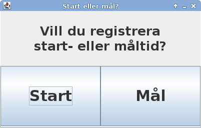

Filerna är formaterade som CSV med semikolon som separator. Exempel på en fil med deltagare:
StartNo; Namn 1; Anders Andersson 2; Bengt Bengtsson
Registreringsprogrammet används för att registrera deltagares start- och måltider. Tiderna lagras i separata filer (start.txt respektive finish.txt) i hemkatalogen för senare bearbetning.
Dubbelklicka på programfilen (EnduroRegister.jar). Ett fönster visas som låter användaren välja mellan att registrera start- eller måltider.
När ett av alternativen väljs ändras programmets gränssnitt till att ett som låter användaren mata in tider och startnummer. Detta beskrivs nedan. För att byta läge måste programmet startas om.
Gränssnittet består av ett fält för att mata in startnummer och en knapp för att registrera tiden. Underst i fönstret visas ett statusfält med information om de senast sparade tiderna. Gränssnittet fungerar likadant för att registrera start- och måltider.
Deltagare 2 har registrerats vid tidpunkten 21.53.10. Deltagare 4 håller på att registreras.
Fyll i förarens startnummer i fältet och välj Registrera. Även enter-tangenten kan användas. Den registrerade tiden syns i det nedre fältet.
Flera startnummer kan anges separerade med kommatecken, eller som ett intervall (ex. 1-5). Alla dessa kommer då att registreras vid samma tidpunkt.
Om användaren klickar på Registrera utan att ange ett startnummer så stoppas klockan och programmet frågar sedan efter ett startnummer. Detta kan utnyttjas för att registrera målgången av en förare med oläsligt startnummer.
Deltagare 2 och 4 har registrerats. Systemet väntar på ett nytt startnummer som kommer att registreras med tidpunkten 21.53.26.
Tiderna sparas kontinuerligt under programmets användning och behöver inte sparas manuellt.
För att avsluta programmet behöver man bara stänga ner fönstret.
Sortering av resultatet görs av ett separat program. Resultatet sparas sorterat efter både startnummer och placering i separata filer som anges i konfigurationen, se nedan.
Dubbelklicka på programfilen (EnduroSorter.jar). Sorteringsprogrammet är inte interaktivt och avslutas direkt med ett meddelande om sorteringen lyckades eller inte. Alla inställningar görs i konfigurationsfilen som beskrivs närmare under Konfiguration nedan.
Programmet läser in start- och måltider och namn från filer som angivits i konfigurationen. Om en totaltid inte kan beräknas för att antingen start- eller måltid saknas skrivs istället --.--.-- ut.
Om en starttid eller sluttid saknas så skrivs istället Start? respektive Slut? ut. Då flera start- eller måltider registrerats så skrivs en notering ut tillsammans med alla överflödiga registeringar på formen Flera starttider? 12.12.00 12.13.30. Om en totaltid anses vara orimlig skrivs Omöjlig Totaltid? ut.
Sorteringsprogrammet konfigureras med hjälp av filen sorter.cfg placerad i hemkatalogen. Filen består av ett antal tilldelningssatser, en per rad, där en inställning tilldelas ett värde. Ett exempel som tilldelar NumberOfLaps värdet 1:
NumberOfLaps=1Rader som inleds med ett brädgårdstecken (#) betraktas som kommentarer och ignoreras av sorteringsprogrammet. Alla filnamn anges relativt från användarens hemkatalog.